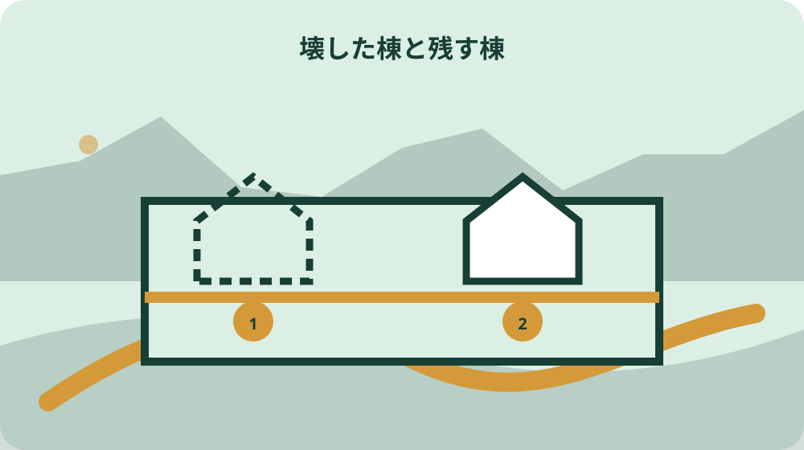
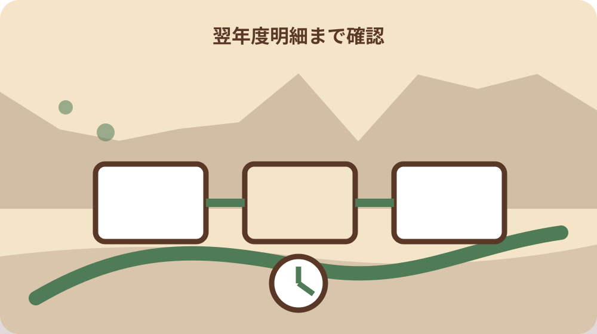

先に結論を確認する
この記事の答え：森町税務課への家屋取り壊し届と、登記済み建物について法務局へ行う滅失登記は別の手続です。課税明細・配置図・登記記録で同じ棟を特定し、町届出の受付・現地確認・翌年度明細と、登記の受付・添付到達・完了確認を別欄で管理してください。
森町で最初に照合する条件：町届出と滅失登記を同じ完了印にせず、受付先と確認資料を分ける。
結論：町届出と滅失登記を別の完了欄で管理する
家屋を壊した後に必要なのは、解体業者から請求書を受け取ることだけではありません。森町が家屋課税を確認するための取り壊し届と、登記済み建物を登記記録から消す滅失登記は、提出先も確認方法も異なります。一件表に二つの完了欄を置き、片方だけで終えないことがこの記事の答えです。
最初の行には建物の所在地、家屋物件番号、用途、構造、評価面積、取り壊した日を置きます。その右側に、森町税務課への届出日と現地確認状況、法務局への申請日と登記完了確認を並べます。同じ建物を指しているかを一行で追える形にすると、書類の取り違えを減らせます。
森町の届出は固定資産税台帳上の家屋滅失を確認する入口です。一方、登記済み建物には登記手続の確認が必要です。町へ届けたから登記も消えた、登記を申請したから町への連絡は不要、と置き換えず、それぞれの受付先へ同じ建物情報を示します。
完成条件は、解体日が分かる証拠、町へ出した届の控え、現地確認について町から受けた説明、登記済みなら滅失登記の受付と完了確認、翌年度の課税明細の照合が一つの袋にそろうことです。未確認の欄は空白にせず、確認先と次の連絡日を書きます。
この台帳は解体を勧めるためのものではありません。すでに取り壊した家屋、相続後に解体を終えた家屋、複数棟のうち一棟だけを撤去した案件で、町の課税対象と登記上の建物を正確に対応させるために使います。
取り壊した日と一月一日の課税基準を混同しない
固定資産税は毎年一月一日の状態が翌年度課税を考える重要な基準になります。年末に工事を終えた場合でも、実際に建物がなくなった日、廃材搬出が終わった日、業者の完了書の日付が一致するとは限りません。台帳には根拠資料名とともに日付を分けて残します。
森町は、届出を受けて税務課職員が現地調査を行い、家屋の滅失を確認した場合に翌年度から当該家屋の固定資産税を課税しないと説明しています。届出書を投函した日だけで課税結果を断定せず、現地確認に必要な連絡や追加資料がないかを資産税係へ尋ねます。
年をまたぐ工事では、屋根や壁が撤去された日と基礎撤去日が分かれることがあります。どの時点を町が滅失として確認するかは現場写真だけで自己判断せず、工事範囲と日程を説明して確認します。写真には撮影日、方向、残っている構造を添えます。
解体業者の工事完了報告、請求書、領収書、産業廃棄物関係書類は、それぞれ別の目的を持ちます。町の届出に何を添えるか、登記で何を準備するかを混ぜず、資料一覧に発行者と対象建物を書きます。同じ敷地に倉庫が残る場合は特に棟番号を付けます。
翌年度の課税明細が届いたら、取り壊した家屋が家屋欄から外れているか、残した家屋が誤って消えていないかを確認します。税額だけを見るのではなく、所在地、用途、床面積、家屋番号を前年資料と一行ずつ照合します。
課税明細と名寄帳から対象棟を特定する
森町の記入例は、課税明細書や名寄帳などを参考に、家屋の所在地、種類・用途、構造、屋根、階数、評価面積、家屋物件番号を書く構成です。解体現場の呼び名だけで届出を作らず、町の課税資料に載る表記へ対応させます。
母屋、離れ、物置、車庫を家族が一括して『実家』と呼んでいても、課税上は別棟の場合があります。現場平面図に一、二、三と番号を振り、課税明細の各行にも同じ番号を鉛筆で控えます。解体した棟と残した棟の境界が見える写真も残します。
評価面積と解体業者の見積面積が違っていても、すぐ誤りと決めません。課税資料の床面積、登記記録の床面積、業者が積算した施工面積は目的が違うことがあります。台帳は三つを別列にし、森町や登記所へ示す数値の出典を明確にします。
共有名義や相続未登記の家屋では、工事を依頼した人、固定資産税の納税義務者、登記名義人が一致しない場合があります。届出者と所有者が別欄になっている森町様式を利用し、誰がどの立場で連絡するかを家族間で確認します。
家屋物件番号が分からない、名寄帳の取得可否を知りたい、課税明細を紛失したという場合は、推測番号を書きません。本人確認や委任関係を含めて資産税係へ相談し、確認できた資料名と確認日を台帳へ追記します。
町の家屋取り壊し届を現地確認へつなぐ
森町は家屋を取り壊したとき、税務課資産税係へ家屋取り壊し届出書を提出するよう案内しています。様式ページには届出書と記入例があります。最新版を開き、古い手元様式をそのまま複写せず、提出方法と必要欄を確認します。
届出書には届出者と所有者の住所、氏名、日中連絡先を記入します。届出者が相続人、管理者、代理人の場合は、町が確認したい関係資料があるかを事前に尋ねます。家族の署名を代筆したり、連絡先を業者だけにしたりしません。
各棟について、取り壊した日、所在地、種類・用途、構造、屋根、階数、評価面積、家屋物件番号を記入します。三棟以上なら裏面も使うという記入例に合わせ、別紙を足す場合も棟番号と総枚数を付けます。
町の現地調査に備え、敷地への進入方法、立会い可能者、門扉や犬の有無、残存建物、境界付近の工作物を伝えられるようにします。現地確認の具体的な日時や立会い要否は町の案内に従い、台帳では予定と実績を分けます。
提出後は受付日、提出方法、担当窓口、控えの所在、追加資料の有無を記録します。受付印がない電子提出や郵送の場合も、送信記録や追跡番号だけで完了とせず、町が対象家屋を特定できたかを確認します。
配置図で残す棟と壊した棟を分ける
森町の記入例は裏面に取り壊し家屋配置図を書くよう示しています。地図を美しく描くことが目的ではなく、同じ敷地に複数棟があるときに、どの建物がなくなり、どの建物が残るかを町が判別できることが目的です。
配置図には道路、敷地入口、母屋、離れ、物置、車庫などの相対位置を置き、取り壊した棟を明確な線種や網掛けで示します。方位、棟番号、道路側から見た写真番号を添えると、課税明細の一行と現地を結びやすくなります。
一部取り壊しや増築部分だけの撤去では、建物全体が滅失した案件と同じ表現にしません。残った部分の用途、構造、接続状況を写真と簡単な図で示し、町が必要とする届出や確認方法を資産税係へ相談します。
航空写真や民間地図の建物形状が古いこともあります。地図の輪郭だけで棟を確定せず、課税明細、現場写真、工事見積、登記記録を照合します。資料が食い違う箇所は赤字で断定せず『町確認』『登記確認』と振り分けます。
配置図の写しは家族用台帳にも残し、翌年度の課税明細確認まで保管します。跡地に新築する予定がある場合も、旧建物の取り壊し確認と新建物の手続を同じ一行へ上書きせず、旧棟と新棟に別番号を与えます。

登記済み建物は滅失登記の経路を別に確認する
町の取り壊し届は固定資産税の確認に使う町手続であり、登記済み建物の登記記録を消す手続と同じではありません。まず建物が登記されているか、登記事項証明書などで所在、家屋番号、種類、構造、床面積、名義人を確認します。
法務局は個人所有者向けに建物滅失登記のオンライン申請を案内し、マイナンバーカードとICカードリーダライタが必要と説明しています。利用できない場合は書面申請を利用できるため、家族の機器環境だけで手続不能と決めません。
オンライン申請では、書面で作成された添付情報を受付から二日以内に登記所へ持参するか書留郵便等で送る必要があると法務局が案内しています。送信日だけで完了扱いにせず、添付情報の発送日、到達確認、補正連絡を別欄にします。
法務局の共通編と建物滅失登記編の操作手引書を先に確認し、対象不動産の入力、電子署名、添付情報の扱いを整理します。管轄登記所や必要書類は案件で確認し、不明なときは土地家屋調査士への相談も選択肢として記録します。
未登記家屋なら滅失登記という同じ経路にはなりません。ただし未登記かどうかを課税明細だけで断定せず、登記情報を確認します。町届出の完了欄と登記確認の結果欄を分けることで、『登記なし確認済み』も証拠付きで残せます。
住宅用地特例の変化を家屋税の減少と相殺しない
森町は住宅を取り壊した場合、住宅用地に対する特例が適用されなくなり、翌年度の土地の固定資産税・都市計画税が上がる場合があると注意しています。家屋税がなくなるから総額も必ず下がる、と工事前後の税額を単純計算しません。
台帳には家屋欄だけでなく土地欄も置き、取り壊し前の土地利用、住宅の戸数、跡地利用、新築予定、完成予定日を記録します。森町の記入例にも跡地用途、建築確認申請の有無、建築予定、完成予定日の欄があります。
新築計画がある場合でも、取り壊しから新築までの時期や一月一日の状態により確認事項が変わる可能性があります。税額を予測して契約条件に書く前に、旧家屋の滅失、新家屋の完成予定、土地利用を資産税係へ説明します。
駐車場、資材置場、畑、空地などへ利用を変える場合は、現況地目や土地評価に関する別の確認が必要になることがあります。家屋取り壊し届の一枚ですべて処理されると考えず、跡地利用の相談先と必要な追加届を確認します。
翌年度の通知では、家屋税の消滅と土地税の変化を別々に検算します。前年と総額だけを比較すると、残存家屋の誤りや土地特例の変化を見落とします。土地の課税標準額、家屋の明細行、説明を受けた日を台帳へ残します。
相続家屋は名義と解体証拠を時系列でそろえる
相続した家屋では、亡くなった人の課税名義、登記名義、工事契約者、届出者が異なることがあります。誰が解体を決めたかだけで書類を作らず、相続関係と申請権限を確認し、町と登記所へ同じ事情を説明できるようにします。
森町様式の所有者欄には納税義務者の情報を、届出者欄には窓口へ届ける人の情報を入れる構成です。相続人代表者の届、相続登記、家屋取り壊し届は効果が違うため、提出済み書類名と未了手続を一覧にします。
工事請負契約書、解体証明、領収書、施工前後写真には対象建物が分かる情報を付けます。住所だけでは同一敷地の別棟を区別できないことがあるため、家屋番号、物件番号、用途、配置図番号を可能な範囲で対応させます。
相続人が複数いるときは、町への連絡担当、登記相談担当、翌年度通知の確認担当を決めます。個人情報を家族全員へ無制限に共有せず、担当者が必要な資料だけを受け取り、閲覧日と返却先を記録します。
売却予定がまだなくても、この記録は役立ちます。将来の売買や土地利用相談で、いつ誰がどの建物を壊し、町と登記所で何を確認したかを説明できます。空欄は推測で埋めず、未確認理由と確認先を残します。
解体後の証拠を写真・書類・受付記録に分ける
写真は施工前、工事中、施工後の三段階に分け、道路側、敷地奥、隣接建物との位置関係が分かる方向から撮ります。人物や隣家内部が写る場合は共有範囲に注意し、町や登記手続へ提示する目的を超えて公開しません。
書類は工事契約、解体証明、請求書、領収書、町届出控え、登記申請控え、登記完了確認、翌年度課税明細に分けます。電子ファイル名には日付、棟番号、発行者を入れ、単に『解体書類最新版』としません。
受付記録には提出日時、方法、担当窓口、受付番号、追加依頼、回答期限を書きます。電話で受けた説明は相手の氏名を無理に求めず、部署、日時、質問、回答要旨、再確認事項を残します。公式資料で確認できる事実と個別回答を分けます。
紙原本が必要になる可能性を考え、スキャン後すぐに捨てません。原本提出、写し提出、提示のみ、返却予定を資料ごとに決めます。オンライン登記で書面添付を送る場合は、発送方法と追跡番号を受付欄へ結びます。
家族用共有版には、登記識別情報や個人番号など不要な機密を載せません。進捗だけを共有する一覧と、原本を保管する限定台帳を分けます。保管場所を変更した日も記録し、相続後に一人しか所在を知らない状態を避けます。
届出後の翌年度確認までを工程に含める
町へ届出を出した日や登記申請日を最終日とせず、翌年度の課税明細確認まで工程に入れます。現地確認が済んだか、補足資料が必要か、登記完了後の記録がどうなったかを途中確認し、未了項目を持ち越します。
町の届出については、提出、受付確認、現地確認、翌年度明細という四段階で管理します。登記については、登記有無確認、申請準備、受付、添付到達、補正、完了確認という別の段階にします。進み方の違いを一つのチェック印で隠しません。
翌年度の課税明細が届かなかった、家屋欄に旧家屋が残る、残存家屋が見当たらないという場合は、前年資料と届出控えを用意して資産税係へ問い合わせます。税額だけを理由に誤りと断定せず、対象物件と確認経緯を伝えます。
登記記録も、申請した事実と完了した結果を分けます。受付番号、補正対応、完了日、完了後に確認した証明書等を台帳へ置きます。オンライン画面の一時表示だけに頼らず、法務局の案内に沿って保存できる記録を確認します。
完了後は資料を町届出、登記、工事、課税、跡地利用に仕切って保管します。次の建築や売却を予定していない場合も、翌年の確認が済むまでは散逸させません。その後の保管期間は資料の性質と家族の必要性を見て決めます。

大石の視点：建物が消えた証拠を二つの台帳へ渡す
ここからは森町や法務局の公式見解ではなく、私、大石浩之の実務上の提案です。公的事実は町の届出、現地確認、翌年度課税、法務局の滅失登記案内です。私はそれらを一件の引継ぎ票で結び、土地を急いで売らなくても説明可能な状態を作るのがよいと考えます。
私なら解体前に課税明細と登記記録から棟一覧を作り、現場配置図へ同じ番号を振ります。解体後は工事写真、町届出、登記申請の三つに番号を引き継ぎます。こうすれば、母屋だけを壊したのに物置まで消した扱いになるような取り違えを防ぎやすくなります。
町届出と登記を一人に丸投げせず、家族の確認担当を決めます。専門家へ依頼する場合も、依頼範囲、本人が受け取る成果物、未了事項を確認します。依頼したという記録だけで終えず、完了を何で確認するかを先に決めます。
住宅用地特例の変化は、解体後に初めて気づくと家計の見通しが崩れます。私は工事前に跡地利用と一月一日時点の予定を町へ相談し、回答日と前提を残すことを勧めます。ただし税額の確定や個別判断は町の担当窓口へ委ねます。
この整理は売却査定のためだけではありません。空地として保有する、家族が新築する、駐車場にする、判断を保留する場合にも使えます。まず建物がなくなった事実と公的記録を一致させ、その後に土地の選択肢を比較する順序が安全です。
まとめ：棟番号・二つの受付・翌年度明細を残す
家屋解体後は、課税明細と配置図で対象棟を特定し、森町の家屋取り壊し届と登記済み建物の滅失登記を別々に進めます。二つは関係しますが同じ手続ではありません。提出先、受付日、必要資料、完了確認を二列にして管理します。
森町届出では、届出者と所有者、取り壊し日、所在地、用途、構造、評価面積、物件番号、跡地利用、配置図を確認します。提出後は現地確認の状況を記録し、翌年度の課税明細で家屋欄と土地欄を照合します。
登記済み建物では、登記事項と現場の棟を対応させ、法務局の案内に沿ってオンラインまたは書面の申請経路を確認します。オンライン送信後に書面添付が必要な場合の期限もあるため、受付と発送を別の完了欄にします。
住宅を壊すと土地の住宅用地特例が外れ、土地税が上がる場合があります。家屋税がなくなる効果と土地税の変化を相殺して予測せず、跡地利用、新築予定、一月一日の状態を資産税係へ説明します。
今日できる一歩は、前年の課税明細、登記事項、解体契約書、施工前後写真を机に並べ、現場配置図へ棟番号を振ることです。分からない欄には推測を書かず、森町資産税係、管轄登記所、必要に応じ専門家へ確認する日を記入してください。